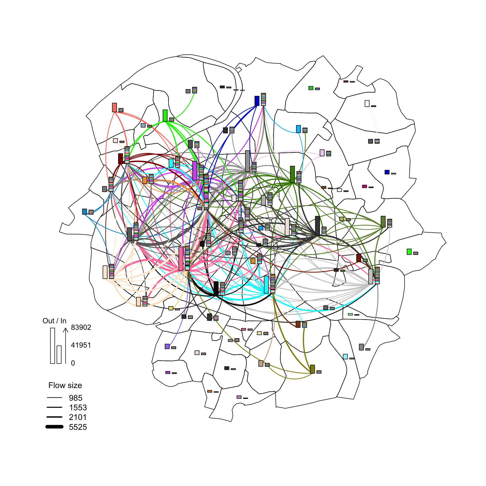
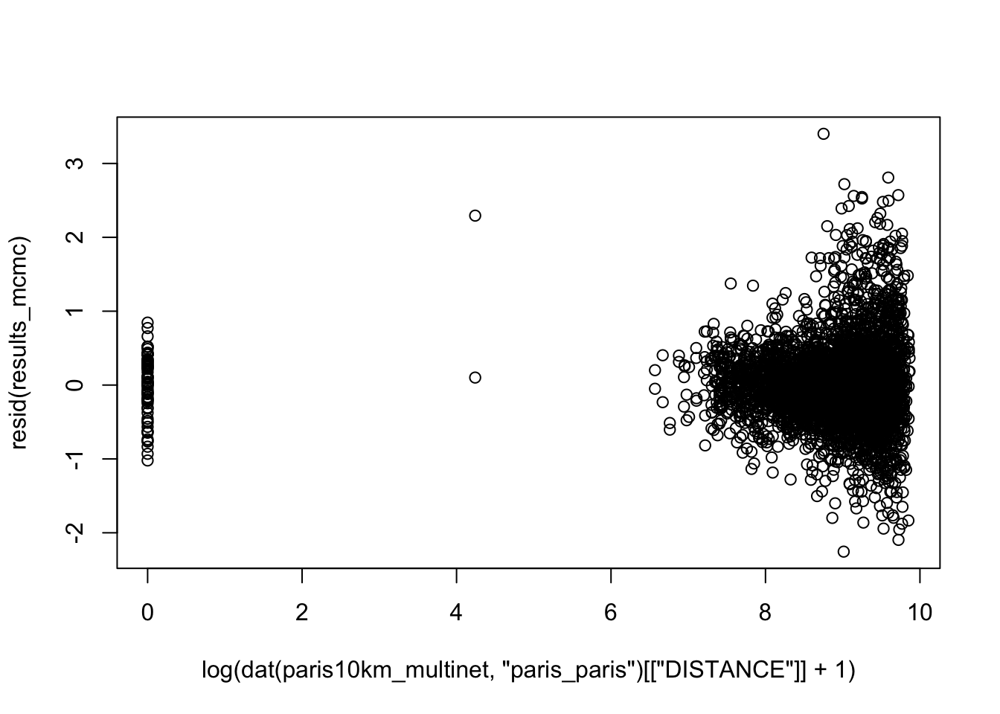

pacman::p_load(Matrix,sf,spdep,tmap)
#devtools::install_github("LukeCe/spflow")
library(spflow)
data("paris10km_municipalities")
data("paris10km_commuteflows")Spatial Econometric Interaction Modelling
R
spflow
Home-to-work commuting flows within the municipalities around Paris
1.0 Overview
This exercise uses spflow package for modeling spatial interactions using the example of home-to-work commuting flows. We will use information on the 71 municipalities that are located closest to the center of Paris. This data is contained in the package and was originally diffused by the French National Institutes of Statistics and Economic Studies (INSEE), and of Geographic and Forest Information (IGN).
2.0 Importing Packages and Datasets
Each municipality is identified by a unique id. Additionally, we have information on the population, the median income and the number of companies.
paris10km_municipalitiesSimple feature collection with 71 features and 5 fields
Geometry type: MULTIPOLYGON
Dimension: XY
Bounding box: xmin: 2.199785 ymin: 48.76454 xmax: 2.499719 ymax: 48.95192
Geodetic CRS: WGS 84
First 10 features:
ID_MUN POPULATION MED_INCOME NB_COMPANY AREA geometry
1 75101 17100 31842.56 14333 182 MULTIPOLYGON (((2.344559 48...
2 75102 22390 30024.50 14478 99 MULTIPOLYGON (((2.347832 48...
3 75103 35991 30988.00 10696 117 MULTIPOLYGON (((2.350091 48...
4 75104 27769 30514.67 7412 160 MULTIPOLYGON (((2.344559 48...
5 75105 60179 32950.00 10290 252 MULTIPOLYGON (((2.344559 48...
6 75106 43224 38447.69 10620 215 MULTIPOLYGON (((2.344559 48...
7 75107 57092 41949.00 12602 412 MULTIPOLYGON (((2.320777 48...
8 75108 38749 39774.00 52237 386 MULTIPOLYGON (((2.327121 48...
9 75109 59474 32771.00 23687 218 MULTIPOLYGON (((2.325762 48...
10 75110 94474 25154.00 23996 288 MULTIPOLYGON (((2.364678 48...tm_shape(paris10km_municipalities)+
tm_fill("ID_MUN",
palette = c("#57bfc0","#7977f3", "#ce77b4","#f67774","#f89974", "#f8d673","#f9f777")) +
tm_borders(col = "white")+
tm_layout(main.title = "Paris Municipalities",
main.title.position = "center",
main.title.size = 2,
main.title.fontface = "bold",
legend.show = FALSE) +
tm_borders(alpha = 0.5) +
tm_compass(type="8star", text.size = 1.5, size = 3, position=c("RIGHT", "TOP")) +
tm_scale_bar(position=c("LEFT", "BOTTOM"), text.size=1.2) +
tm_grid(labels.size = 1,alpha =0.2)There are three different neighborhood matrices that can be used to describe the connectivity between the municipalities.
old_par <- par(mfrow = c(1, 3), mar = c(0,0,1,0))
mid_points <- suppressWarnings({
st_point_on_surface(st_geometry(paris10km_municipalities))})
paris10km_nb <- list(
"by_contiguity" = spdep::poly2nb(paris10km_municipalities),
"by_distance" = spdep::dnearneigh(mid_points,d1 = 0, d2 = 5),
"by_knn" = spdep::knn2nb(knearneigh(mid_points,3))
)
plot(st_geometry(paris10km_municipalities))
plot(paris10km_nb$by_contiguity, mid_points, add = T, col = rgb(0,0,0,alpha=0.5))
title("Contiguity")
plot(st_geometry(paris10km_municipalities))
plot(paris10km_nb$by_distance,mid_points, add = T, col = rgb(0,0,0,alpha=0.5))
title("Distance")
plot(st_geometry(paris10km_municipalities))
plot(paris10km_nb$by_knn, mid_points, add = T, col = rgb(0,0,0,alpha=0.5))
title("3 Nearest Neighbors") par(old_par)Finally, there is data on the size of the commuting flows and the distance between all pairs of municipalities
head(paris10km_commuteflows) ID_ORIG ID_DEST DISTANCE COMMUTE_FLOW
1 75101 75101 0.000 3771.23556
2 75101 75102 786.743 294.76899
3 75101 75103 1729.063 71.25116
4 75101 75104 1807.294 99.38468
5 75101 75105 2266.598 98.88915
6 75101 75106 1512.870 65.154063.0 Modeling Spatial Interactions with spflow()
The spflow package builds on the idea that flows correspond to pairwise interactions between the nodes of an origin network with the nodes of a destination network.
In our example, the origin and destination networks are the same because every municipality is both an origin and destination of a flow.
To estimate the model efficiently, the spflow package uses moment-based estimation methods, that exploit the relational structure of flow data. This avoids duplication arising from the fact that each municipality is at the origin and destination of many flows. For more details on the model and the estimation methods see LeSage (2008), Dargel (2021) and Dargel (2022).
3.1 Creating spflow network objects
To describe the nodes of a network the package provides spflow_network-class that combines attributes of the nodes with the chosen network structure. For our model we choose the contiguity based neighborhood structure.
First, we will create an object paris10km_net using sp_network_nodes() function. This object represents the nodes in our network. Each municipality will serve as a node.
paris10km_net <- spflow_network(
id_net = "paris",
node_neighborhood = nb2mat(paris10km_nb$by_contiguity),
node_data = paris10km_municipalities,
node_key_column = "ID_MUN")
paris10km_netSpatial network nodes with id: paris
--------------------------------------------------
Number of nodes: 71
Average number of links per node: 5.239
Density of the neighborhood matrix: 7.38% (non-zero connections)
Data on nodes:
ID_MUN POPULATION MED_INCOME NB_COMPANY AREA COORD_X COORD_Y
1 75101 17100 31842.56 14333 182 2.34 48.86
2 75102 22390 30024.5 14478 99 2.34 48.87
3 75103 35991 30988 10696 117 2.36 48.86
4 75104 27769 30514.67 7412 160 2.36 48.85
5 75105 60179 32950 10290 252 2.35 48.85
6 75106 43224 38447.69 10620 215 2.33 48.85
--- --- --- --- --- --- --- ---
66 94046 54186 24329 3385 537 2.44 48.8
67 94067 21846 31559.38 1763 90 2.42 48.84
68 94069 14870 25790.65 957 144 2.43 48.82
69 94076 56504 19447 2690 529 2.36 48.79
70 94080 49831 30798 4655 191 2.43 48.85
71 94081 88102 17860.5 4467 1166 2.4 48.79Next, we will create an object paris10km_pairs using sp_network_pair() function. This object represents the edges in our network. Each origin-destination record from paris10km_commuteflows will serve as an edge.
paris10km_net_pairs <- spflow_network_pair(
id_orig_net = "paris",
id_dest_net = "paris",
pair_data = paris10km_commuteflows,
orig_key_column = "ID_ORIG",
dest_key_column = "ID_DEST")
paris10km_net_pairsSpatial network pair with id: paris_paris
--------------------------------------------------
Origin network id: paris (with 71 nodes)
Destination network id: paris (with 71 nodes)
Number of pairs: 5041
Completeness of pairs: 100.00% (5041/5041)
Data on node-pairs:
ID_DEST ID_ORIG DISTANCE COMMUTE_FLOW
1 75101 75101 0 3771.24
2 75102 75101 786.74 294.77
3 75103 75101 1729.06 71.25
4 75104 75101 1807.29 99.38
5 75105 75101 2266.6 98.89
6 75106 75101 1512.87 65.15
--- --- --- --- ---
5036 94046 94081 3742.08 218.66
5037 94067 94081 6105.73 60.28
5038 94069 94081 4535.03 102.04
5039 94076 94081 2567.25 1067.62
5040 94080 94081 7277.43 120.11
5041 94081 94081 0 9257.91The function spflow_network_multi() combines information on the nodes and the node-pairs and also ensures that both data sources are consistent.
paris10km_multinet <- spflow_network_multi(paris10km_net,paris10km_net_pairs)
paris10km_multinetCollection of spatial network nodes and pairs
--------------------------------------------------
Contains 1 spatial network nodes
With id : paris
Contains 1 spatial network pairs
With id : paris_paris
Availability of origin-destination pair information:
ID_ORIG_NET ID_DEST_NET ID_NET_PAIR COMPLETENESS C_PAIRS C_ORIG C_DEST
paris paris paris_paris 100.00% 5041/5041 71/71 71/71Given the information on origins, destinations and OD pairs we can use the spflow_map() method for a simple geographic representation of the largest flows.
plot(paris10km_municipalities$geometry)
spflow_map(
paris10km_multinet,
flow_var = "COMMUTE_FLOW",
add = TRUE,
legend_position = "bottomleft",
filter_lowest = .95,
remove_intra = TRUE,
cex = 1)
Before estimating a model we should investigate the correlation structure of the input data. The pair_cor() method creates a correlation matrix, which we can represent using the cor_image(). The formula is used clarify which variables should be included in the correlation matrix.
cor_formula <- log(1 + COMMUTE_FLOW) ~ . + P_(log( 1 + DISTANCE))
cor_mat <- pair_cor(paris10km_multinet, spflow_formula = cor_formula, add_lags_x = FALSE)
colnames(cor_mat) <- paste0(substr(colnames(cor_mat),1,3),"...")
cor_image(cor_mat)4.0 Estimation
The core function of the package is spflow(), which provides an interface to four different estimators of the spatial econometric interaction model.
4.1 Estimating with default values
Estimation with default settings requires two arguments: a spflow_network_multi-class and a spflow_formula. The spflow_formula specifies the model we want to estimate. In this example, the dependent variable is a transformation of commuting flows and we use the do- shortcut to indicate that all available variables should be included in the model. Using the defaults leads to the most comprehensive spatial interaction model, which includes spatial lags of the dependent variable, the exogenous variables and additional attributes for intra-regional observations.
results_default <- spflow(
spflow_formula = log(1 + COMMUTE_FLOW) ~ . + P_(log( 1 + DISTANCE)),
spflow_networks = paris10km_multinet)
results_default--------------------------------------------------
Spatial interaction model estimated by: MLE
Spatial correlation structure: SDM (model_9)
Dependent variable: log(1 + COMMUTE_FLOW)
--------------------------------------------------
Coefficients:
est sd t.stat p.val
rho_d 0.439 0.016 27.834 0.000
rho_o 0.796 0.010 82.408 0.000
rho_w -0.372 0.020 -18.226 0.000
(Intercept) -0.158 0.073 -2.168 0.030
(Intra) 6.179 0.296 20.908 0.000
D_POPULATION 0.000 0.000 4.254 0.000
D_POPULATION.lag1 0.000 0.000 -0.170 0.865
D_MED_INCOME 0.000 0.000 -2.422 0.015
D_MED_INCOME.lag1 0.000 0.000 6.300 0.000
D_NB_COMPANY 0.000 0.000 2.437 0.015
D_NB_COMPANY.lag1 0.000 0.000 2.542 0.011
D_AREA 0.000 0.000 6.368 0.000
D_AREA.lag1 0.000 0.000 -4.319 0.000
O_POPULATION 0.000 0.000 22.902 0.000
O_POPULATION.lag1 0.000 0.000 -5.740 0.000
O_MED_INCOME 0.000 0.000 0.609 0.542
O_MED_INCOME.lag1 0.000 0.000 0.192 0.848
O_NB_COMPANY 0.000 0.000 -5.610 0.000
O_NB_COMPANY.lag1 0.000 0.000 1.050 0.294
O_AREA 0.000 0.000 6.278 0.000
O_AREA.lag1 0.000 0.000 -4.951 0.000
I_POPULATION 0.000 0.000 -3.538 0.000
I_MED_INCOME 0.000 0.000 -8.722 0.000
I_NB_COMPANY 0.000 0.000 4.787 0.000
I_AREA -0.001 0.000 -5.401 0.000
P_log(1 + DISTANCE) NA NA NA NA
--------------------------------------------------
R2_corr: 0.9110008
Observations: 5041
Model coherence: Validated4.2 Adjusting the formula
We can adjust how the exogenous variables are to be used by wrapping them into the D_(), O_(), I_() and P_() functions. The variables in P_() are used as OD pair features and those in D_(), O_() and I_() are used as destination, origin and intra-regional features. We can take advantage of the formula interface to specify transformations and expand factor variables to dummies.
clog <- function(x) {
log_x <- log(x)
log_x - mean(log_x)
}
spflow_formula <-
log(COMMUTE_FLOW + 1) ~
D_(log(NB_COMPANY) + clog(MED_INCOME)) +
O_(log(POPULATION) + clog(MED_INCOME)) +
I_(log(POPULATION)) +
P_(log(DISTANCE + 1))
results_mle <- spflow(
spflow_formula,
paris10km_multinet)
results_mle--------------------------------------------------
Spatial interaction model estimated by: MLE
Spatial correlation structure: SDM (model_9)
Dependent variable: log(COMMUTE_FLOW + 1)
--------------------------------------------------
Coefficients:
est sd t.stat p.val
rho_d 0.213 0.019 11.150 0.000
rho_o 0.726 0.012 59.127 0.000
rho_w -0.022 0.024 -0.904 0.366
(Intercept) -0.809 0.289 -2.796 0.005
(Intra) 6.829 0.893 7.646 0.000
D_log(NB_COMPANY) 0.285 0.016 18.075 0.000
D_log(NB_COMPANY).lag1 -0.220 0.022 -10.099 0.000
D_clog(MED_INCOME) -0.343 0.051 -6.663 0.000
D_clog(MED_INCOME).lag1 0.509 0.073 6.959 0.000
O_log(POPULATION) 0.763 0.021 36.230 0.000
O_log(POPULATION).lag1 -0.649 0.031 -21.085 0.000
O_clog(MED_INCOME) -0.081 0.050 -1.631 0.103
O_clog(MED_INCOME).lag1 -0.006 0.066 -0.094 0.925
I_log(POPULATION) -0.422 0.082 -5.178 0.000
P_log(DISTANCE + 1) -0.073 0.022 -3.257 0.001
--------------------------------------------------
R2_corr: 0.9207571
Observations: 5041
Model coherence: Validated4.3 Fine-grained control with spflow_control()
More fine-grained adjustments are possible via the spflow_control argument. Here we change the estimation method and the way we want to model the spatial autoregression in the flows. To use spatial lags only for certain variables, we need to specify them as a second formula.
sdm_formula <- ~
O_(log(POPULATION) + clog(MED_INCOME)) +
D_(log(NB_COMPANY) + clog(MED_INCOME))
cntrl <- spflow_control(
estimation_method = "mcmc",
sdm_variables = sdm_formula,
model = "model_7")
results_mcmc <- spflow(
spflow_formula,
paris10km_multinet,
estimation_control = cntrl)
results_mcmc--------------------------------------------------
Spatial interaction model estimated by: MCMC
Spatial correlation structure: SDM (model_7)
Dependent variable: log(COMMUTE_FLOW + 1)
--------------------------------------------------
Coefficients:
est quant_025 quant_975 sd
rho_d 0.200 0.171 0.227 0.014
rho_o 0.722 0.699 0.745 0.012
(Intercept) -0.769 -1.332 -0.199 0.289
(Intra) 6.811 5.087 8.592 0.903
D_log(NB_COMPANY) 0.290 0.260 0.321 0.015
D_log(NB_COMPANY).lag1 -0.229 -0.266 -0.192 0.019
D_clog(MED_INCOME) -0.347 -0.449 -0.247 0.051
D_clog(MED_INCOME).lag1 0.510 0.373 0.656 0.072
O_log(POPULATION) 0.775 0.742 0.807 0.016
O_log(POPULATION).lag1 -0.666 -0.711 -0.621 0.024
O_clog(MED_INCOME) -0.083 -0.181 0.015 0.051
O_clog(MED_INCOME).lag1 -0.001 -0.129 0.125 0.066
I_log(POPULATION) -0.419 -0.583 -0.260 0.082
P_log(DISTANCE + 1) -0.070 -0.113 -0.029 0.021
--------------------------------------------------
R2_corr: 0.9205745
Observations: 5041
Model coherence: Validated4.4 Visualisations to diagnose the fit
Calling plot(results_mcmc) would create a whole sequence of graphics that allow to diagnose the fit. Here we concentrate on a selection of these graphics. The pairwise correlations of the model data show, for example, that the residuals and their spatial lags are not correlated with the explanatory variables.
res_corr <- pair_cor(results_mcmc)
colnames(res_corr) <- substr(colnames(res_corr),1,3)
cor_image(res_corr)We can also create Moran scatter plots to check whether the residuals still exhibit spatial autocorrelation with respect to the three potential neighborhood matrices \(W_d\), \(W_o\), & \(W_w\).
old_par <- par(mfrow = c(1, 3), mar = c(2,2,2,2))
spflow_moran_plots(results_mcmc)
par(old_par)A quick investigation of the 2% residuals with largest magnitude reveals that long distances seem to be predicted with lower precision.
plot(paris10km_municipalities$geometry)
spflow_map(
results_mcmc,
add = TRUE,
legend_position = "bottomleft",
filter_lowest = .98, # concentrate on the 2% largest (in magnitude)
cex = 1) Looking at the relation between the distances and the error confirms this impression. A more complex model could account for the increasing variance by weighting the observations during the estimation. This could be achieved using the weight_variable option in spflow_control(), but is left out in this introductory vignette.
plot(log(dat(paris10km_multinet, "paris_paris")[["DISTANCE"]] + 1), resid(results_mcmc))5.0 Evaluating the impact of changing the input data
Finally we can evaluate the impact certain characteristics have on the outcome. Here we look at a scenario where the population in the central municipality is increased by 10%. As this has diverse effects on all flows we will first look at an image of the effect matrix.
center_mun <- "75101"
change_paris <- dat(paris10km_multinet, "paris")
change_paris <- change_paris[change_paris$ID_MUN == center_mun,]
change_paris[,"POPULATION"] <- change_paris[,"POPULATION"]*1.1
change_paris <- change_paris[,1:2] # keep the ID and the variable that changed
effect_matrix <- predict_effect(
results_mcmc, # the model
new_dat = list("paris" = change_paris), # changes in network "paris"
return_type = "M") # return in matrix form
# in the first row are those flows that go to the center
# in the first column are those flows that start from the center
image(effect_matrix)Here we see that flows starting from the center increase and flows that start from neighbors of the center to the center decrease. All other effects are very small. We can then have a closer look at the flows that start from the center or go to it. Additionally we look at all the internal flows, which decrease for all municipalities except for the center.
plot(cbind("FLOWS_FROM_CENTER" = effect_matrix[,1], paris10km_municipalities["geometry"]))
plot(cbind("FLOWS_TO_CENTER" = effect_matrix[1,], paris10km_municipalities["geometry"]))